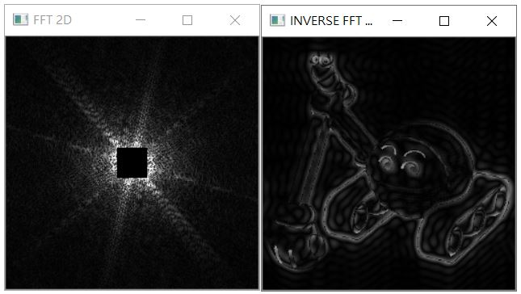
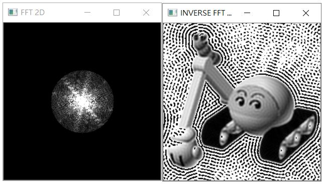

在〈傅立葉轉換（二）〉，談過如何透過一維傅立葉轉換等過程，對訊號進行濾波，而在〈傅立葉轉換（四）〉中談過二維傅立葉轉換等過程，是不是也可以進行濾波之類的處理呢？
是的！其中一個應用就是尋找圖像邊緣，在〈傅立葉轉換（三）〉談過，對圖像來說，高頻訊號就視覺上來看，會讓界線較為明顯，如果可以去除低頻訊號，保留高頻訊號，就有機會保留圖像邊緣。
例如，直接將指定一個四方形的低頻範圍設為 0：
import cv2
import numpy as np
f_range = 15 # 低頻範圍
img = cv2.imread('caterpillar.jpg', cv2.IMREAD_GRAYSCALE)
rows, cols = img.shape
cy, cx = int(rows / 2), int(cols/2)
# 傅立葉轉換後並位移低頻
shifted = np.fft.fftshift(np.fft.fft2(img))
max_amp = np.max(np.abs(shifted))
# 低頻範圍內設為 0
shifted[cy - f_range:cy + f_range, cx - f_range:cx + f_range] = 0
# 顯示一下頻域目前的樣子
cv2.imshow('FFT 2D', np.abs(shifted) / max_amp * 255)
# 逆轉換
inversed = np.fft.ifft2(np.fft.ifftshift(shifted))
inversed_img = np.abs(inversed).astype('uint8')
cv2.imshow('INVERSE FFT 2D', inversed_img)
cv2.waitKey(0)
cv2.destroyAllWindows()
低頻範圍要設多大，就看想要什麼效果，頻域中被設為 0 的訊號，就是振幅被設為 0，逆轉換後的結果灰階度就是 0，也就是呈現黑色，其餘灰階度保留，顯示結果如下：

你也可以做其他的頻率處理，來完成一些效果，例如，指定圓形的頻率範圍，保留低頻部份：
import cv2
import numpy as np
f_range = 50 # 低頻範圍
img = cv2.imread('caterpillar.jpg', cv2.IMREAD_GRAYSCALE)
rows, cols = img.shape
cy, cx = int(rows / 2), int(cols/2)
x = np.arange(-cx, cx)
X, Y = np.meshgrid(np.arange(-cx, cx), np.arange(-cy, cy))
# 位移後的頻域表示
shifted = np.fft.fftshift(np.fft.fft2(img))
max_amp = np.max(np.abs(shifted))
# 低頻範圍內設為 0
shifted[X ** 2 + Y ** 2 > f_range ** 2] = 0
cv2.imshow('FFT 2D', np.abs(shifted) / max_amp * 255)
# 轉回圖片
inversed = np.fft.ifft2(np.fft.ifftshift(shifted))
inversed_img = np.abs(inversed).astype('uint8')
cv2.imshow('INVERSE FFT 2D', inversed_img)
cv2.waitKey(0)
cv2.destroyAllWindows()
這會顯示以下的結果，可以看到，灰階值高低不是代表頻率高低，因為挖土機以外的背景，實際上有不少低頻訊號（背景中顯示為白色的部份，而白色表示灰階值高）：

這邊只是簡單地示範了讓高頻保留的高通濾波、低頻保留的低通濾波，該做什麼樣的濾波處理，基本上還是依不同的圖片、想完成的效果而定。